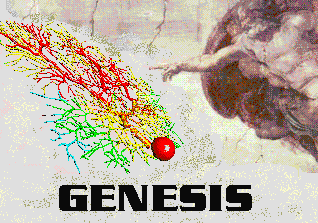

Back to the main
index
Back to the main
index

David Beeman, University of Colorado, Boulder
This document is an expanded version of various presentations on the use of GENESIS for realistic neural modeling given at GENESIS users meetings (GUM 2002, WAM-BAMM 2005 and 2006), the EU Advanced Course on Computational Neuroscience, the Latin American School on Computational Neuroscience (LASCON 2006 and 2008), and the Frankfurt Institute of Advanced Studies (FIAS 2006) summer school on theoretical neuroscience and complex systems. The papers referenced below are listed in the list of References.
When choosing which software to use for neural modeling, it is important to decide on the level of detail that the conceptual model requires, and to then choose the most appropriate tool for the job.
GENESIS (the GEneral NEural SImulation System) was designed as an extensible general simulation system for the realistic modeling of neural and biological systems, based on the known anatomical and physiological organization of neurons, circuits and networks (Bower, 1995). Thus, single cell models in GENESIS usually include dendritic morphology and a variety of ionic conductances, whereas realistic network models attempt to duplicate known efferent and afferent projection patterns. Although GENESIS can be extended to model more abstract networks, other simulators are more suitable for connectionist modeling and simplied integrate-and-fire models.
The GENESIS tutorials in this package emphasize biologically realistic cell and network models. Other GENESIS tutorials (e.g. Blackwell, 2005) show how to use GENESIS at the subcellular level to realistically model calcium transport and biochemical reactions.
But, there are many reasons why one should NOT make realistic neural simulations. We should at least be aware of them. The usual excuses are:
The human brain is large and complex, with
The review by Brette et al. (2007) desacribes many good simulators for integrate-and-fire and other simplified neural models. For a brief summary of abstract neural modeling techniques and their limitations, see the Summary of methods used for simplified neuronal models.
But there are also some good reasons to face this challenge. Jim Bower has discussed the value of structurally realistic modeling and the modeling philosophy behind the GENESIS approach to modeling (Bower, 2005). You can also read his thoughts on choosing the level of detail to use in modeling in Chapter 11 of the Book of GENESIS.
However, we can't model the brain down to every level of detail, so we have to decide what features are important for the types of computation that are performed by the brain. With any sort of modeling of a complicated system, this question always comes up. Someone once said that if we really wanted biological realism, then airplanes should have feathers. Then, there is the story of the physicist who was going to model a race horse to predict the winner of a horse race. ("First, let us assume a spherical horse ...") We don't want our model to be either an airplane with feathers or a spherical horse. The decision to leave out certain details should be an informed one, and not based on ignorance of the details.
Some good reasons to consider structurally realistic modeling are:
The original 1989 GENESIS olfactory cortex simulation had 4500 neurons and ran on a 0.02 GHz Sun 3. More recent models, such as a 18,500 cell neocortex model with six varieties of multicompartmental cells (Herald et al. 2005; van Drongelen et al. 2006) use the extension of GENESIS for parallel computers (PGENESIS) to run on systems ranging from Personal Computers (PCs) with multicore processors and clusters of workstations to supercomputers such as the BlueGene/L. Now, the widespread availability of inexpensive mass-market "Extreme Gaming" PCs with quad core processors makes it posssible for modelers with a limited budget to model very large networks using PGENESIS without needing access to a parallel supercomputer. Models of moderate size, such as the 918 neuron model of turtle visual cortex (Nenadic, et al. 2003) are routinely run with GENESIS on slow single processor PCs. The prospects for modeling very large networks will continue to improve as the available hardware gets faster and more parallel.
If we plunge ahead and strive for maximal biological realism, here are some of the challenges that we face:
There are a large variety of neurons that have shapes (morphology) and behavior that are specific to their function in the network. Here are some types of neurons found in visual cortex;
There are many varieties of spiking patterns in cortical neurons, such as these observed by Nowak, et al. (2003).
Even a "simplified" neocortical wiring diagram, such as this one redrawn from Shepherd (2004) is very complex with detailed and specific patterns of connections for each type of neuron.
If you are familiar with this material, you may skip to the next section on Modeling with GENESIS.
How do we use GENESIS, NEURON, or other simulation software to make a detailed realistic simulation of real neuron like this hippocampal pyramidal cell, or a network composed of them?
As you can see, it doesn't look much like the ones you see in treatments of artificial neural networks, where you have a little circle with a summation sign inside. There are extensive trees of dendrites with the apical dendrites at the top, and basal dendrites at the bottom. Other neurons make synaptic connnections at various points on this structure, and release neurotransmitters that open channels, allowing ions to flow in or out of the cell, resulting in the production of post-synaptic potentials. It turns out that these dendrites play an important role in the processing of information by the cell. The pyramid shaped cell body, or soma, contains voltage activated sodium and potassium channels somewhat similar to those studied by Hodgkin and Huxley in the giant axon of the squid. Post-synaptic potentials produced in the dendrites can propagate to the soma to trigger action potentials. Throughout the cell, we also have passive channels that remain partly open all the time, leading to a leakage resistance. The insulating cell membrane separates the conductive cytoplasm inside the cell from the salt water environment outside, giving rise to a membrane capacitance. As the cytoplasm has some resistance, we also have an axial resistance along the dendrites and axon (not visible in this picture). To an electrical engineer or physicist, a section of dendrite acts like a leaky cylindrical capacitor, coupled to neighboring sections with resistances.
Taking this point of view, the answer to our question is - we model it piece by piece. The usual approach is to model this with a lumped parameter model in which we divide the neuron into a finite number of compartments containing resistances, capacitances and batteries to represent ionic equilibrium potentials. We model this complex neuron with something like this.
As a contrast to this simple model with just a few compartments, here is a model of a Purkinje cell from the cerebellum made with GENESIS by De Schutter and Bower. It has 4550 comparments and 8021 active conductances ("channels"). If you look closely, you can see that it is actually composed of many cylinders.

Why would one need to construct such a detailed model? If the goal is to understand the way that individual neurons "compute", rather than to implement some abstract model of "neural computation", there is no way to avoid understanding the way that the dendritic structure processes its many inputs. After achieving this understanding with a structurally realistic model, it might be possible to produce a simpler "ball and stick" model that will function equivalently in a large network model. If we ultimately want a simple, computationally efficient neuron model that can be used in simulations of very large neuronal networks, it is better to throw out details after proving that they aren't significant, rather than just hoping that we didn't omit something important at the outset.
Each of these compartments has an equivalent circuit. Here is a circuit diagram for a generic compartment.

Vm represents the membrane potential at a point inside the compartment, relative to the "ground" symbol outside the cell. The membrane capacitance Cm can be charged or discharged as current flows into or out of the compartment, changing the value of Vm. This current can come from adjacent compartments, from the passage of ions through ion channels, or from a current Iinject through a probe injected into the compartment. Adjacent compartments have membrane potentials Vm' and Vm'', and the difference in potential across the axial resistances Ra and Ra' can cause current to enter or leave the compartment. The "leakage resistance" Rm and its associated equilibrium potential Em represent the passive channels, and the resistor with the arrow through it represents one of the possible variable conductances that are specific to a particular ion or combination of ions. By convention, these are represented by a conductance Gk, rather than a resistance, 1/Gk. Each one of these conductances has an associated equilibrium potential represented by the battery labeled Ek. The equilibrium potential (reversal potential) is the value of Vm at which there is no net flow of the ion through the conductance. Most neural simulation packages provide a way to calculate these from the Nernst equation. Typically, there will be several of these variable resistances, with different conductances and equilibrium potentials, corresponding to the different types of channels in the compartment. For example, the area near the region of the soma called the "axon hillock" may contain voltage dependent sodium and potassium channels, and regions in the dendrites are likely to contain channels that are chemically activated from synaptic connections. The index k is being used here to represent one of these various types of conductances.
Electrical circuit theory tells us that the rate of change of the voltage across a capacitor is proportional to the current that is applied to charge it. For the circuit above, the differential equation to be solved by the simulation software is
Of course, the Vm'' and Vm' in the adjacent compartments affect the currents flowing into or out of the compartments, so we are solving many coupled equations in parallel. Also, we will need good models for the way that the conductances Gk vary with voltage, time or synaptic input.
The process of building a biologically realistic compartmental model of a neuron, or a network of such neurons, involves three steps:
These topics are dealt with in greater detail in the Advanced Tutorials presentations on:
You can find an overview of compartmental modeling and the Hodgkin-Huxley
model in my Introduction to Computational
Neuroscience. For example, see the section on Cable Theory of Passive
Propagation in Dendrites, and the review of the Hodgkin-Huxley model with
its link to Further Details of the Hodgkin-Huxley Model.
Constructing the passive cell
First, we need to determine the morphology of the dendritic structure to be used in our model and then to set the values of the passive parameters Rm, Cm, Ra, and Em in the generic compartment diagram.
You will need to decide whether the situation requires an accurate morphological reconstruction, as in the case of the Purkinje cell model described above, or whether a simpler "ball and stick" model is sufficient. The entire process of constructing structurally realistic cell models is covered in the Advanced Tutorial on Realistic Single Cell Modeling.
In either case, the model should display the same passive properties as the cell being modeled. Typically, a negative (hyperpolarizing) current pulse is injected into the cell body. This lowers the membrane potential to a value that will close the voltage-activated channels, eliminating the effect of the Gk terms in the circuit equation and diagram. Ohm's law then gives the input resistance of the cell Rin as the change in Vm divided by the amount of the current injection step. As indicated in the figure, the exponential approach to the final Vm value is given by a membrane time constant Rin·Cm. This represents the time that it takes to charge up and to discharge the membrane capacitance, and will also affect the duration of a post-synaptic potential.
For a simplistic single-compartment model of a cell, Rm will equal Rin. For a multicompartmental model, it will depend on the Rm and Ra values for all the linked compartments. The problem is often simplified by assuming that all compartments have the same Rm for a unit surface area, and the same Ra per unit length. Typically, Cm is about 1 microfarad per square centimeter (0.01 F/m2) of membrane area. The measured membrane time constant provides another way to estimate these values.
A "ball and stick" model of a neuron might consist of a spherical soma compartment with the appropriate surface area of the actual cell soma, connected to a linear chain of cylindrical dendrite compartments. These are designed to provide a "collapsed dentritic tree" with the same passive properties of a much more detailed model made from a reconstruction of a measured cell morpholgy.
Then the model is divided into compartments linked together through the axial resistances. The Digression on Cable Theory in the Lectures on Computational Neuroscience explains why it is customary to choose a compartment length that is less than 5% of the dendrite space constant.
Most models of voltage or concentration dependent conductances are variations of the model developed by Hodgkin and Huxley to explain and describe the production of action potentials in the giant axon of the squid. For a detailed treatment of the Hodgkin-Huxley model, see Chapter 4 of the Book of GENESIS. You can find a simpler review in the section on the Hodgkin-Huxley Model in the Lectures on Computional Neuroscience. It is also worth reading the original paper (Hodgkin and Huxley 1952).
A brief review of the Hodgkin-Huxley model
The diagram below illustrates the ionic basis of the neuron membrane potential.

It is known that the concentration of sodium ions is greater outside the cell, so they have a tendency to enter. The concentration of potassium ions is greater on the inside, so they tend to leave. Metabolic processes within the cell called ionic pumps maintain this balance of concentrations. With this difference in ionic concentrations, the interior of the cell is polarized to a membrane potential of about 70 mV negative to the outside, when the cell is at rest. Because of the higher exterior concentration of sodium, it has an equilibrium potential (reversal potential) of about 45 mV positive with respect to the cell, meaning that it will tend to enter the cell as long as the membrane potential is less than ENa. Likewise, this competition betweem osmotic and electrostatic forces means that potassium will tend to leave unless the membrane potential falls below EK.
Hodgkin and Huxley quantitatively explained the process by which depolarization of the cell (an increase in Vm) causes Na-selective channels to open, allowing Na ions to enter. This raises the potential, further increasing the conduction of the Na channels, and causes the neuron to fire an action potential. Eventually, the Na channels inactivate, and K-selective channels begin to open, causing a flow of charge out of the cell, ending the action potential.
The conductance of the squid axon potassium channel is proportional to the fourth power of the activation variable n. The conductance of the sodium channel is proportional to the product of the third power of its activation variable m and an inactivation variable h, which decreases as the membrane potential increases.
The rate of change of the activation or inactivation variable is given by a differential equation similar to the one for n:
The voltage dependent rate parameters  and are related to the steady
state value of the of the activation
and are related to the steady
state value of the of the activation  and its time constant
for reaching this value
and its time constant
for reaching this value  by the equations
by the equations
These may be measured by voltage clamp experiments. The plot below shows the steady state activation and inactivation variables n, m, and h and their time constants as a function of membrane potential.

From this data, or from published results for other ionic conductances, one can fit the voltage dependence of the rate parameters. The expressions obtained by Hodgkin and Huxley for the potassium conductance are:

The simulator can then solve the differential equations for the activation variables and calculate the Gk for each type of conductance k. Chapter 7 of the Book of GENESIS describes how this approach is used for the several other types of ionic conductances found in neurons, such as calcium conductances, calcium-activated potassium conductances, and inactivating potassium conductances.
The variable conductance in the generic compartment diagram could also represent a synaptically activated cconductance, usually in a dendritic compartment.

This diagram shows a synapse with an action potential propagating to the pre-synaptic terminal, causing neurotransmitter release, and the resulting post-synaptic conductance change, G(t). Current flow through this conductance can lead to a post-synaptic potential (PSP).
There is a lot of biochemistry and molecular biology involved in this behavior, often involving complicated chains of reactions and 'second messengers'. Fortunately, we can often use an empirical fit to the observed behavior, rather than modeling it in detail.
Typically, the conductance change from a quantum of neurotransmitter follows a linear rise and exponential decay, so it is often modeled with a so-called "alpha" function with a single time constant, tau.
Sometimes, a dual exponential function will be used:
The current due to this conductance is I = G·(Ek - Vm), which may be into or out of the cell, depending on the size of the ionic equilbrium potential Ek, relative to the membrane potential. Here we have adopted the convention that a positive current flows into the cell. Thus, if the Ek is large (Na or Ca), the current will be into the cell, and it will be a depolarizing (excitatory) synapse. If it is large and negative (Ek < Vm, as for potassium), it will be an inhibitory synapse. So, we can use the same model for both types of synapses.
If we were interested in understanding the details of axonal propagation we could model an axon as a series of linked compartments containg Hodgkin-Huxley Na and K conductances. We can model synaptic connections more efficiently if we treat an axon as just a delay line for the propagation of spike events that are triggered by action potentials and that last for a single time step.

Hodgkin and Huxley used this general approach to model a single compartment representing a short piece of squid giant axon. You could duplicate their model by writing a program in Pascal, C or FORTRAN to solve the equations given in their papers. However, there are a lot of advantages to using a general purpose simulator such as GENESIS and a high level simulation language, rather than writing code in a computer language.
The design of the GENESIS simulator and interface is based on a ``building block'' approach. Simulations are constructed from modules that receive inputs, perform calculations on them, and then generate outputs. Model neurons are constructed from these basic components, such as compartments. and variable conductance ion channels. Compartments are linked to their channels and are then linked together to form multi-compartmental neurons of any desired level of complexity. Neurons may be linked together to form neural circuits. This object-oriented approach is central to the generality and flexibility of the system, as it allows modelers to easily exchange and reuse models or model components. In addition, it makes it possible to extend the functionality of GENESIS by adding new commands or simulation components to the simulator, without having to modify the GENESIS base code.
GENESIS uses a high-level simulation language to construct neurons and their networks. Commands may be issued either interactively to a command prompt, by use of simulation scripts, or through the graphical interface. A particular simulation is set up by writing a sequence of commands in the scripting language that creates the network itself and the graphical interface for a particular simulation. The scripting language and the modules are powerful enough that only a few lines of script are needed to specify a sophisticated simulation. The principal components of the simulation system and the various modes of interacting with GENESIS are illustrated below.

The underlying level of the GENESIS user interface is the Script Language Interpreter (SLI). This is a command interpreter similar to a Unix system shell with an extensive set of commands related to building, monitoring and controlling simulations. GENESIS simulation objects and graphical objects are linked together using the scripting language. The interpreter can read SLI commands either interactively from the keyboard (allowing interactive debugging, inspection, and control of the simulation), or from files containing simulation scripts.
The graphical user interface (GUI) is XODUS, the X-windows Output and Display Utility for Simulations. This provides a higher level and user-friendly means for developing simulations and monitoring their execution. XODUS consists of a set of graphical objects that are the same as the computational modules from the user's point of view, except that they perform graphical functions. As with the computational modules, XODUS modules can be set up in any manner that the user chooses to display or enter data. Furthermore, the graphical modules can call functions from the script language, so the full power of the SLI is available through the graphical interface. This makes it possible to interactively change simulation parameters in real time to directly observe the effects of parameter variations. The mouse may also be used to plant recording or injection electrodes into a graphical representation of the cell. In addition to provisions for plotting the usual quantities of interest (membrane potentials, channel conductances, etc.), XODUS has visualization features that permit such things as using color to display the propagation of action potentials or other variables throughout a multi-compartmental model, and to display connections and cell activity in a network model.
Here are some examples of the GUI for some GENESIS simulations:
The ``GENESIS Simulation Engine'' consists of the simulator base code that provides the common control and support routines for the system, including those for input/output and for the numerical solution of the differential equations obeyed by the various neural simulation objects.
In addition to receiving commands from the SLI and the GUI, the simulation engine can construct simulations using information from data files and from the pre-compiled GENESIS object libraries. For example, the GENESIS ``cell reader'' allows one to build complex model neurons by reading their specifications from a data file, instead of from a lengthy series of GENESIS commands delivered to the SLI. Similarly, network connection specifications may be read from a data file with the ``fileconnect'' command.
The GENESIS object libraries contain the building blocks from which many different simulations can be constructed. These include the spherical and cylindrical compartments from which the physical structure of neurons are constructed, voltage and/or concentration activated channels, dendro-dendritic channels, and synaptically-activated channels with synapses of several types including Hebbian and facilitating synapses. In addition, there are objects for computing intracellular ionic concentrations from channel currents, for modeling the diffusion of ions within cells (e.g., concentration pools, ionic pumps, and buffers), and for allowing ligand gating of ion channels (e.g., magnesium blocking for NMDA channels).
There are also a number of ``device objects'' that may be interfaced to the simulation to provide various types of input to the simulation (pulse and spike generators, voltage clamp circuitry, etc.) or measurements (peristimulus and interspike interval histograms, spike frequency measurements, auto- and cross-correlation histograms, etc.).
You may find a summary of all the GENESIS device objects in the Reference Manual section on Objects, with links to the documentation for individual objects.
The various elements in a GENESIS simulation are organized in a tree like the one shown below, and are referenced with a notation similar to that used in UNIX directory trees. Thus, "/net/cell[1]/dend[2]/GABA" might refer to an inhibitory synaptically activated conductance residing in the dendrite compartment 2 of cell 1 of a network.
These objects communicate by passing messages to each other, and each contain the knowledge of their own variables (fields) and the methods (actions) that they use to perform their duties during a simulation. For example, during a simulaton step, the PROCESS action will be carried for each type of object in its own way. If it is a voltage activated channel, this means carrying out a step in the numerical solution of the Hodgkin-Huxley equations for the conductance. If it is a graph object, this would mean plotting a point with data from any messages that it receives from other objects.
The GENESIS Modeling Tutorial is a "hands-on" practical guide to creating simulations using the GENESIS scripting language. It provides and analyzes example scripts that you can modify or extend to create your own simulations of single cells and networks. The following examples will give you a feel for what it is like to use the scripting language.
The use of GENESIS scripting language can best be illustrated with a simple example such as the trivial script:
//genesis script for a simple compartment simulation // These commands may also be entered interactively // create an instance of the compartment object create compartment /soma // set some internal fields setfield /soma Rm 10 Cm 2 Em 25 inject 5 // create and display a graph inside a form create xform /data create xgraph /data/voltage xshow /data // add messages (PLOT Vm and inject) to the graph addmsg /soma /data/voltage PLOT Vm *volts *red addmsg /soma /data/voltage PLOT inject *current *blue // make some buttons to execute simulation commands create xbutton /data/RESET -script reset create xbutton /data/RUN -script "step 100" create xbutton /data/QUIT -script quit // initialize each element before starting reset
This would produce the display:
This script is further analyzed and developed in the GENESIS Modeling Tutorial sections A basic tutorial on GENESIS and Making realistic neural compartments.
A more realistic cell model will use messages to link compartments together, and to add ionic conductances. For example, compartments exchange information about their membrane potential (at the previous time step) and axial resistance with the messages and GENESIS commands
/cell/soma /cell/dend
addmsg /cell/soma /cell/dend AXIAL previous_state
addmsg /cell/dend /cell/soma RAXIAL Ra previous_state
Compartments and the ionic conductances ("channels") that they contain require these messages
addmsg /cell/dend /cell/dend/Ex_channel VOLTAGE Vm
addmsg /cell/soma/Ex_channel /cell/dend CHANNEL Gk Ek
Fortunately, you don't need to set up most of these messages by hand, writing a lot of GENESIS addmsg commands. GENESIS has a readcell command that will build a cell from a file that specifies the dimensions of the compartments, how they are connected to each other, and what channels they contain. The use of readcell and the format of GENESIS cell parameter files is is covered in the GENESIS Modeling Tutorial section Building a cell the easy way.
Here is an example of a GENESIS version of the 1991 Traub 19-compartment model hippocampal CA3 region pyramidal cell:
// genesis - "Stand-alone" version of the traub91 tutorial setclock 0 0.00005 // set the simulation clock /* file for 1991 Traub model channels */ include traub91proto.g // Create a library of prototype elements to be used by the cell reader create neutral /library pushe /library create symcompartment symcompartment make_Na make_Ca make_K_DR make_K_AHP make_K_C make_K_A make_Ca_conc pope // Build the cell from a parameter file using the cell reader readcell CA3.p /cell setfield /cell/soma inject 0.2e-9 // Provide 0.2 nA injection current include graphics.g // You create this file to provide a GUI reset
This is the basis of a suggested exercise (see cells/traubcell/README), where it is up to you to implement the graphical interface. This simulation makes use of two other files. cells/traubcell/CA3.p is a "cell parameter file" describing the cell, and cells/traubcell/traub91proto.g defines the functions to make the channels and other elements used in the model.
Here is a simple example of a GENESIS script to create an ionic conductance, similar to the ones in traub91proto.g.
/* FILE INFORMATION
GENESIS script to make a "squid-like" K channel
squid giant axon voltage-dependent channels,
A.L.Hodgkin and A.F.Huxley, J.Physiol(Lond) 117, pp 500-544 (1952)
*/
// CONSTANTS
float EREST_ACT = -0.07 // resting potential (volts)
float EK = -0.082 // potassium equil potential
float SOMA_A = len*PI*dia // compartment area
function make_K_squid_hh
str chanpath = "K_squid_hh"
create tabchannel {chanpath}
setfield ^ Ek {EK} Gbar {360.0*SOMA_A} Ik 0 Gk 0 \
Xpower 4 Ypower 0 Zpower 0
setupalpha {chanpath} X {10e3*(0.01 + EREST_ACT)} \
-10.0e3 -1.0 {-1.0*(0.01 + EREST_ACT)} -0.01 \
125.0 0.0 0.0 {-1.0*EREST_ACT} 80.0e-3
end
This script creates a tabchannel (a Hodgkin-Huxley type voltage activated channel with tabulated values of the state variables). The function setupalpha uses a generalized version of the Hodgkin-Huxley state variables alpha and beta, namely (A + B*V)/(C + exp((V + D)/F)), in order to set up the tabchannel tables. Details of using the tabchannel object and the setupalpha command are given in the GENESIS Reference Manual.
Finally, here are some examples of GENESIS commands that are used to create networks. Of course, you will need to look at the GENESIS Reference Manual to understand exactly how they work, and to study the GENESIS Modeling Tutorial sections Making synaptic connections and Creating large networks with GENESIS.
These statements create a synaptically activated channel (synchan), and send it spike events that are triggered by the membrane potential of a cell soma.
/* create a synaptically activated channel and set some fields
create synchan /cell/dend[5]/Ex_channel
setfield /cell/dend[5]/Ex_channel tau1 3e-3 tau2 3e-3 gmax 5.0e-10
/* Add a spike generator to the soma of a cell */
create spikegen /cell/soma/spike
setfield /cell/soma/spike thresh 0 abs_refract 0.010 output_amp 1
/* use the soma membrane potential to drive the spike generator */
addmsg /cell/soma /cell/soma/spike INPUT Vm
/* make an excitatory connection to cell2 */
addmsg /cell/soma/spike /cell2/dend/Ex_channel SPIKE
setfield /cell2/dend/Ex_channel synapse[0].weight 10 synapse[0].delay 0.005
Networks of cells are created by making copies of a prototype cell. This can be done individually:
copy /library/pyr_cell /cortex/cell[5] // copy a prototype cell
or large arrays can be constructed with the createmap command:
// Make two arrays of cells cell[0] through cell[nx*ny-1]
createmap /proto/cell /lgn {nx} {ny} -delta {dx} {dy}
createmap /proto/cell /v1 {destx} {desty} -delta {dx} {dy}
GENESIS also has commands to set up connections between an array of cells:
// Make connections from the LGN to the V1 cells in a certain region
planarconnect /lgn/cell[]/spike /v1/cell[]/glu -relative \
-sourcemask box -1 -1 1 1 \
-destmask box {-dx * 2.4} {-dy * 0.6} {dx * 2.4} {dy * 0.6}
// Use a file to specify the connections
fileconnect /lgn/##[TYPE=spikegen] /v1/cell[]/glu conn.wts -wtscale 0.01
The GENESIS Modeling Tutorial section on Creating large networks with GENESIS illustrates the steps leading up to a simulation of a a grid of simplified neocortical regular spiking pyramidal cells, each one coupled with excitory synaptic connections to its four nearest neighbors. This might model the connections due to local association fibers in a cortical network. The example simulation, in the networks/RSnet directory, was designed to be easily modified to allow you to use other cell models, implement other patterns of connectivity, or to augment with a population of inhibitory interneurons and the several other types of connections in a cortical network. When you run RSnet.g with the default parameters, you will see something like:
This animated image
shows repeating sequences from the view widget that represents the membrane
potentials for each of the cells in the network, using a cold to hot color
scale. Here, you can see propagating waves of action potentials.
As a final example of the interfaces and models possible with GENESIS, the snapshot below shows propagating cortical waves in the Nenadic, Ghosh, and Ulinski (2003) large scale model of turtle visual cortex. The model contains a total of 918 neurons that consist of 3 to 16 compartments, including two types of pyramidal cells and a variety of interneurons.. It is being used to study the cortical activation when different types of moving or stationary stimuli are presented to the retina, in an attempt to understand how the turtle obtains information about the position and speed of visual stimuli.

The four graphs show the network response by plotting the soma membrane potential of selected medial and lateral layer pyramidal cell neurons, and the window under the control panel shows the locations of the lateral (represented by squares) and medial (represented by triangles) pyramidal cells. During the simulation, they change color to represent the soma membrane potenial of the cells cells. This snapshot was taken at about 0.4 sec when the wave shows maximal excitation at both the upper left and lower left.
The simulation scripts and documentation for the model are included in the "Ultimate GENESIS Tutorial Distribution" package from the the GENESIS web site, and also my be downloaded from ModelDB ( http://senselab.med.yale.edu/modeldb/ShowModel.asp?model=94845). The model is also described in more detail in the final section of the Lectures on Computional Neuroscience, with a video clip of the simulation.
If you would like to try running some GENESIS demos and tutorials, there is information to help you get started in the README file for your installation of GENESIS. To create your own GENESIS simulations, see the GENESIS Modeling Tutorial.
References cited in this document
Last updated on: Tue Jul 1 10:33:47 MDT 2008
 GENESIS Home Page
GENESIS Home Page {kind=link}
{kind=link}
{kind=link}
{kind=link}